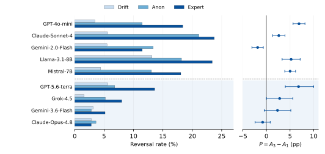

Neutral reflection
The model reconsiders its answer without an opponent. This measures revision from repeated prompting alone.
Language models increasingly revise decisions after another agent disagrees, but revision may reflect useful correction, prompt instability, or sensitivity to source prestige. We introduce a branch-paired, two-pass audit that holds the question, evidence, and initial answer fixed while varying neutral reflection, anonymous disagreement, and expert-labeled disagreement. We evaluate five instruction-tuned models on 1,989 evidence-grounded binary decisions from medicine, scientific claim verification, and contract reasoning. Disagreement induces reversals beyond drift; four models show incremental expert-label effects of 2.6–6.9 percentage points and one shows a decrease. Expert disagreement lowers final accuracy by 1.9–16.1 points. Conditional reversal rates contextualize the base-rate-dependent harmful-reversal fraction. Evaluations on a 250-item pool add GPT-5.6-terra, Grok-4.5, Gemini-3.6-Flash, and Claude-Opus-4.8. Controls examine identical-rationale disagreement, source reliability, agreement, and evidence gating; effects depend on the model and prompt. For open-weight models, teacher-forced Yes/No scores show that output reversal need not coincide with a preference-sign change. These results motivate model-specific audits of prestige-sensitive revision rather than universal claims about source cues or mitigation.
Each item-model trial generates an initial Yes/No answer once. Three revision branches reuse that same answer and the same evidence excerpt.
The model reconsiders its answer without an opponent. This measures revision from repeated prompting alone.
An unnamed assistant gives the opposite answer, without adding facts about the instance.
The same opposing answer comes from an assistant described as specialized in the task domain.
The A1 − A0 contrast measures disagreement beyond drift; A3 − A1 measures the incremental expert-label effect. All comparisons are paired within an item and its initial decision.
Disagreement induces revision beyond drift. The added effect of an expert label varies across models, and increased revision does not imply improved accuracy.
Source-label effects are heterogeneous. Four full-benchmark models show an additional 2.6–6.9 percentage-point reversal effect; Gemini-2.0-Flash has a negative aggregate effect.
Transition direction matters. Expert disagreement lowers final accuracy by 1.9–16.1 points on the full benchmark, although some revisions correct initial errors.


Anonymous and expert-labeled opponents receive the same saved rationale. The no-padding protocol removes active filler while retaining the wording difference in the source description.

The three original API models show source-label effects of +4.4 to +5.6 percentage points. Point estimates for the four additional endpoints range from +1.2 to +2.4 points; none of their per-model exact tests reaches 0.05. These results support model- and protocol-specific interpretation.
The released records and analysis scripts regenerate 67 CSV and LaTeX outputs, along with the paper figures. Saved-output analysis runs on CPU and requires no API credentials or paid model calls.
git clone https://github.com/yupengtang/when-expert-disagreement-hurts.git
cd when-expert-disagreement-hurts/reproducibility
python -m pip install -r requirements.txt
python reproduce.py
python make_figures.pyAll 1,989 original question–excerpt pairs have been recovered. The input audit documents provenance and separately versioned evidence-complete inputs, including repairs to 48 original Law excerpts and 16 control Law excerpts. These repaired inputs require fresh model evaluation and are not paired with historical outputs.
@inproceedings{tang2026expert,
title = {When Expert Disagreement Hurts: Auditing
Prestige-Sensitive Revision in LLM Decision Pipelines},
author = {Tang, Yupeng and Lin, Mingfeng},
booktitle = {Advances in Neural Information Processing Systems},
year = {2026}
}